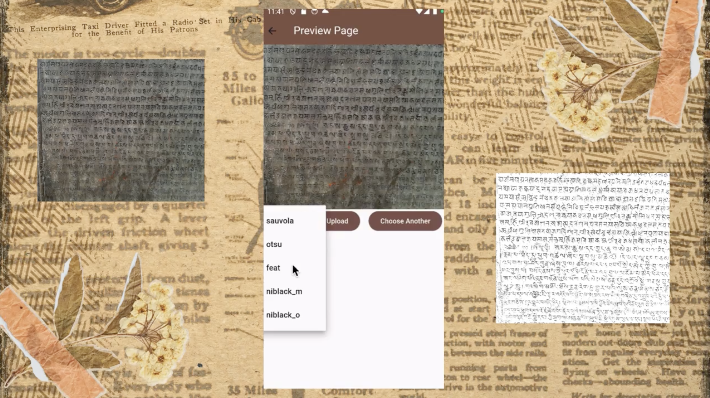

A few things I've built, experimented with, and learned from along
the way.

Abhilekh
Digitizing Nepali stone inscriptions
What happens when you point a phone at a centuries-old stone
inscription? I worked on a project to make Nepali stone inscriptions
easier to digitize and preserve using image processing and OCR.
We experimented with thresholding techniques including Otsu,
Niblack, and Sauvola before passing the images through Tesseract OCR.
I also built a mobile and Django backend pipeline so inscriptions
could be captured, processed, and uploaded from a phone.
I started wondering whether period prediction systems actually knew
much about women like us. So we collected menstrual cycle data from
150 Nepali women and looked at whether population-specific data could
make prediction models more useful.
I modeled cycle patterns, generated synthetic time-series data, and
trained LSTM models for prediction. The project also became a way to
think about a larger problem I keep coming back to: what happens
when a model trained on one population is quietly assumed to work
everywhere?
PyTorch · LSTMs · time series · data analysis · Python
Grant Document Generator
RAG for finding and writing grant information
We built a RAG-based tool to make the painfully tedious process of
searching through grant documents a little easier. The system
retrieved relevant information from grant materials and used it to
help generate application documents.